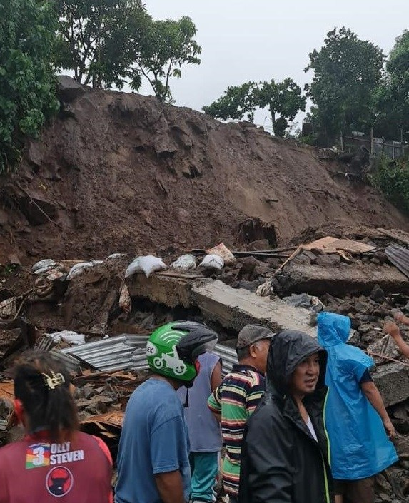

Universitas Haluoleo
BANTU SAUDARA KITA DI MANADO

.jpg)
foto: Tanah Longsor dan Banjir di Manado
Manado
berduka. Dua Bencana,
Banjir
dan
Tanah Longsor,
yang melanda ibu kota Provinsi Sulawesi Utara (Sulut), itu memakan korban jiwa.
Banjir dan tanah longsor menerjang usai Manado dihantui cuaca ekstrem dalam beberapa hari terakhir. Informasi terakhir yang disampaikan Basarnas Manado, enam warga meninggal dunia.
"Total ada enam orang keseluruhan yang meninggal sesuai titik-titik lokasi longsor kemarin," tutur Kepala Kantor Basarnas Manado, Suhri Noster Norbertus Sinaga , Minggu (17/1/2021)
Tanah longsor terjadi di sejumlah titik di Manado pada Sabtu (16/1/2021). Tanah longsor terjadi di Kelurahan Paal IV Perkamil, Malalayang, Ranotana Weru, dan Kelurahan Kombos Timur. Kepala Pusat Data, Informasi dan Komunikasi Kebencanaan BNPB, Raditya Jati mengatakan data terbaru hingga Senin, sebanyak 6 orang meninggal dunia akibat banjir dan longsor tersebut.
"Pusdalops juga mencatat sebanyak 500 jiwa mengungsi, sebagian sudah pulang ke rumah masing-masing," kata Raditya dalam keterangan tertulis sebagaimana dimuat di Kompas.com, Senin.
Selain korban jiwa, banjir dan longsor juga menimbulkan kerugian material yakni dua unit rumah rusak berat dan 10 unit rumah rusak sedang.
Universitas Haluoleo Open Donation untuk korban Banjir dan tanah Longsor di Manado. Melihat dari data Kondidi sekarang ini, Korban Bencana yang terjadi Di Sulawesi Utara cukup banyak. Untuk Donasi yang diterima berupa uang, Logistik, dan Obat-obatan
Untuk Donasi berupa Uang bisa di salurkan melalui Rekening: ATM BRI: Atas Nama yasrul:
011776667689
ATM BNI: Atas nama Desy Fitrah:
07177727717728
Untuk Donasi Berupa Logistik dan Obat-obatan bisa langsung dibawah Ke Posko Bantuan Manado di Auditorium Universitas Haluoleo. Lokasi Klik Disini
Batas Penyaluran Dana yaitu pada tanggal 2 Februari 2021 Karen pada Tangal 3 Pagi Bantuan akan dikirim ke lokasi bencana
Banjir dan tanah longsor menerjang usai Manado dihantui cuaca ekstrem dalam beberapa hari terakhir. Informasi terakhir yang disampaikan Basarnas Manado, enam warga meninggal dunia.
"Total ada enam orang keseluruhan yang meninggal sesuai titik-titik lokasi longsor kemarin," tutur Kepala Kantor Basarnas Manado, Suhri Noster Norbertus Sinaga , Minggu (17/1/2021)
Tanah longsor terjadi di sejumlah titik di Manado pada Sabtu (16/1/2021). Tanah longsor terjadi di Kelurahan Paal IV Perkamil, Malalayang, Ranotana Weru, dan Kelurahan Kombos Timur. Kepala Pusat Data, Informasi dan Komunikasi Kebencanaan BNPB, Raditya Jati mengatakan data terbaru hingga Senin, sebanyak 6 orang meninggal dunia akibat banjir dan longsor tersebut.
"Pusdalops juga mencatat sebanyak 500 jiwa mengungsi, sebagian sudah pulang ke rumah masing-masing," kata Raditya dalam keterangan tertulis sebagaimana dimuat di Kompas.com, Senin.
Selain korban jiwa, banjir dan longsor juga menimbulkan kerugian material yakni dua unit rumah rusak berat dan 10 unit rumah rusak sedang.
Universitas Haluoleo Open Donation untuk korban Banjir dan tanah Longsor di Manado. Melihat dari data Kondidi sekarang ini, Korban Bencana yang terjadi Di Sulawesi Utara cukup banyak. Untuk Donasi yang diterima berupa uang, Logistik, dan Obat-obatan
Untuk Donasi berupa Uang bisa di salurkan melalui Rekening: ATM BRI: Atas Nama yasrul:
011776667689
ATM BNI: Atas nama Desy Fitrah:
07177727717728
Untuk Donasi Berupa Logistik dan Obat-obatan bisa langsung dibawah Ke Posko Bantuan Manado di Auditorium Universitas Haluoleo. Lokasi Klik Disini
Batas Penyaluran Dana yaitu pada tanggal 2 Februari 2021 Karen pada Tangal 3 Pagi Bantuan akan dikirim ke lokasi bencana